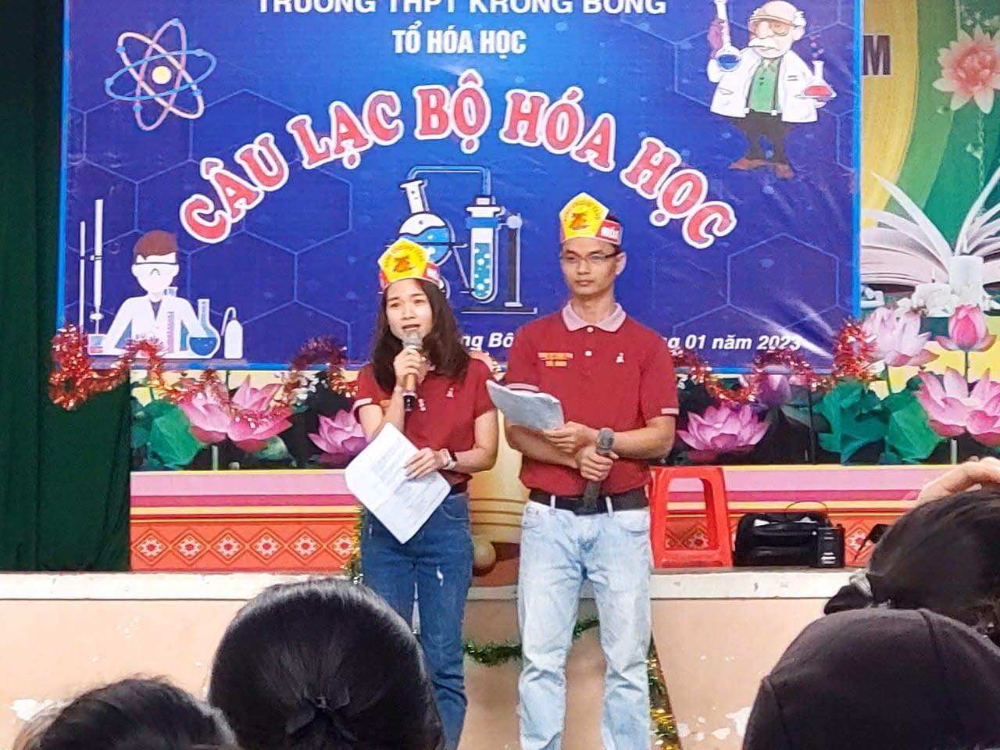
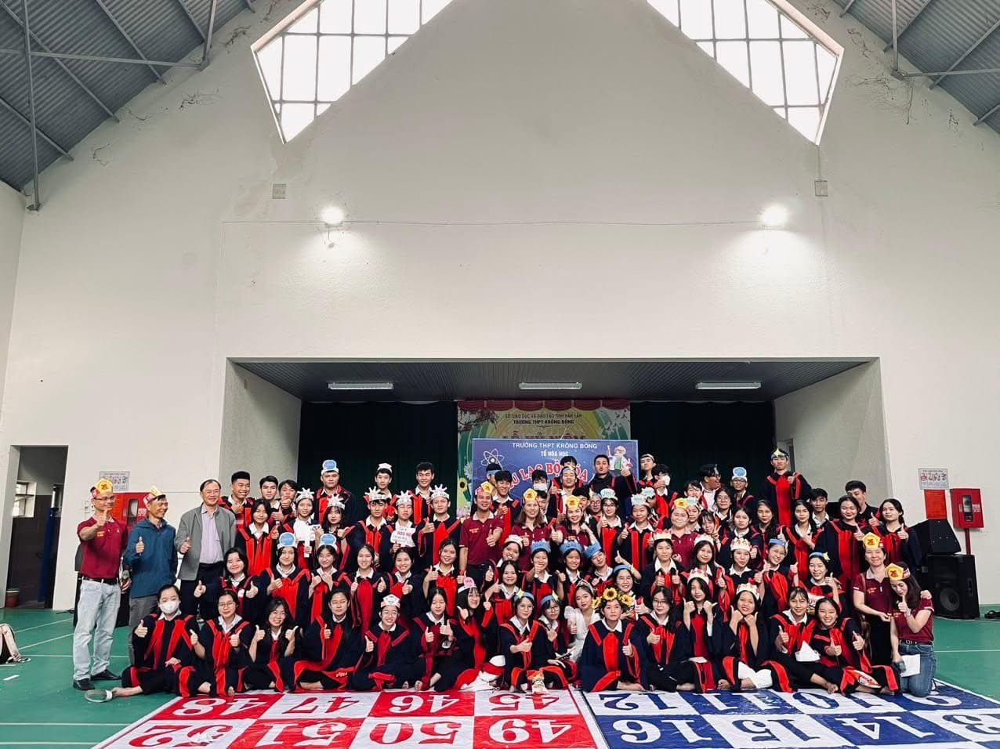

Hoạt động năng nổ và hiệu quả
Cháy hết mình trong các cuộc chơi
Giành những giải thưởng cao nhất
 |
 |
CLB Hóa HọcCLB Hóa học Trường THPT Krông Bông là sân chơi học thuật dành cho những học sinh yêu thích khoa học và khám phá thế giới tự nhiên. Câu lạc bộ giúp các thành viên củng cố kiến thức trên lớp thông qua thí nghiệm thực hành, hoạt động nghiên cứu nhỏ và thảo luận chuyên đề. Việc trực tiếp quan sát phản ứng hóa học giúp học sinh hiểu bài sâu hơn, phát triển tư duy logic và khả năng giải quyết vấn đề. Tham gia CLB còn rèn luyện kỹ năng làm việc nhóm, tính cẩn thận và tinh thần trách nhiệm khi làm việc trong môi trường khoa học. Bên cạnh đó, câu lạc bộ tạo môi trường học tập sinh động, khơi gợi niềm say mê sáng tạo và định hướng nghề nghiệp tương lai. CLB Hóa học không chỉ hỗ trợ học tập mà còn góp phần hình thành thái độ học tập tích cực, tự tin và chủ động khám phá tri thức. | |